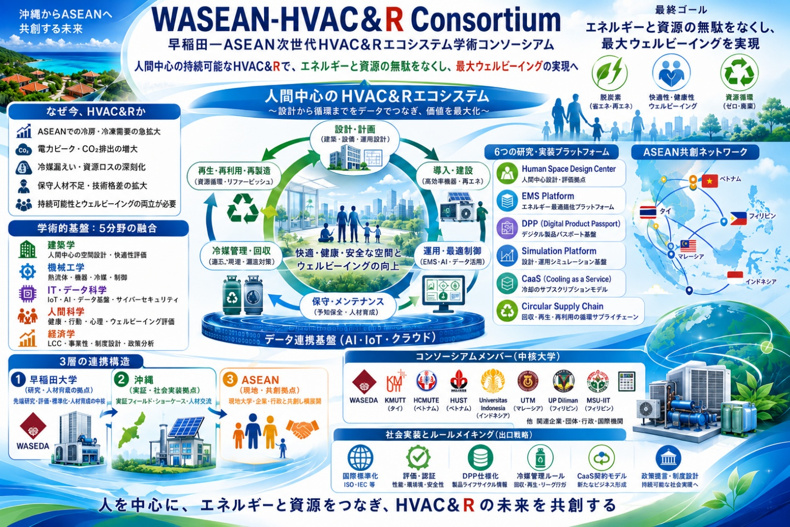

エネルギー・環境問題を世界共通の課題として捉え、海外の大学、研究機関、企業との連携を積極的に進めています。
齋藤研究室では、エネルギー・環境問題を世界共通の課題として捉え、海外の大学、研究機関、企業との連携を積極的に進めています。特に、空調・冷凍・ヒートポンプ、熱エネルギーマネジメント、人間空間デザイン、次世代冷媒、サーキュラーエコノミーなどの分野において、国際共同研究、人材交流、技術実証、国際標準化に取り組んでいます。
近年、経済成長と生活水準の向上が進むアジア・ASEAN地域では、空調・冷凍需要の急速な拡大が見込まれています。一方で、エネルギー消費の増加、温室効果ガス排出、冷媒漏えい、使用済み機器の回収・再資源化、人々の健康や快適性など、多くの課題が生じています。齋藤研究室では、これらの課題を個別に扱うのではなく、機器、建築、エネルギー、情報制御、人間科学を統合した新たな研究領域として捉えています。
早稲田大学とASEAN各国の大学・研究機関が連携する、次世代HVAC&Rエコシステム学術コンソーシアムです。

その中核的な取り組みとして、早稲田大学とASEAN各国の大学・研究機関が連携する「WASEAN HVAC&R Consortium」を推進しています。タイ、ベトナム、インドネシア、マレーシア、フィリピンなどの大学とともに、熱帯地域に適した高効率空調・冷凍技術、低環境負荷冷媒、冷媒管理、デジタル技術を活用した機器管理、デマンドレスポンス、資源循環、人材育成などに取り組んでいます。
また、欧州、北米、中国をはじめとする海外の研究者や国際機関との連携を通じて、ヒートポンプ技術、熱エネルギー利用、カーボンニュートラル政策、国際標準化に関する情報交換と共同研究を進めています。国際学会での研究発表や研究者の招聘、学生の海外派遣、海外大学との共同教育プログラムなども積極的に実施しています。
齋藤研究室が目指しているのは、日本の優れた技術を海外へ展開するだけではありません。各国・各地域が持つ気候、文化、生活様式、産業構造、エネルギー事情を理解し、現地の研究者や学生、企業、行政機関とともに、その地域に適した技術と社会システムを共創することを重視しています。
今後も、国際共同研究と人材育成を両輪として、快適で健康な暮らしと脱炭素社会を両立する「人間中心の持続可能な空調・冷凍・エネルギーシステム」の実現に貢献していきます。